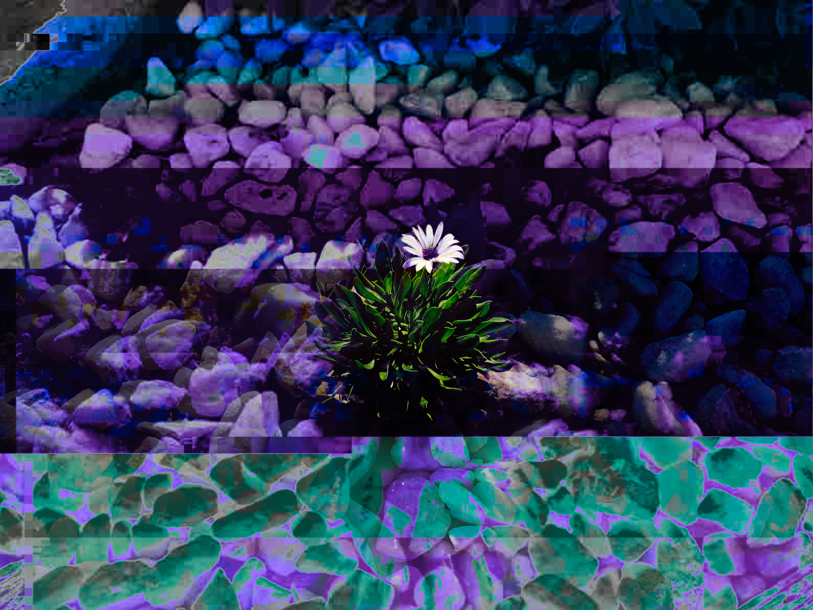

Provis Flora

This is another glitch artwork that I was experimenting with.
I was walking around my neighborhood and spotted this single flower arising out of a patch of white rocks.
It felt like the perfect subject for a glitch piece since organic subjects, like plants, are usually the opposite of what we consider to be digital or technological.
It was the perfect antithesis of a digital creation and the fact that the flower seems to pop out against the background helps to emphasize that point.
I know some people are annoyed by the Hulk purple/green color combo, but I felt that it worked rather well here. The green really helps the flowering plant stand out against that unnatural purple. It also signifies the plant as being a natural object that differs from the unliving material surrounding it.